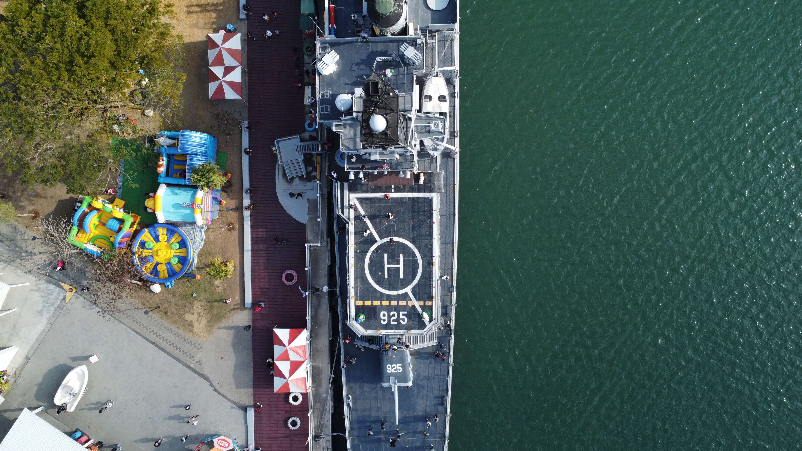
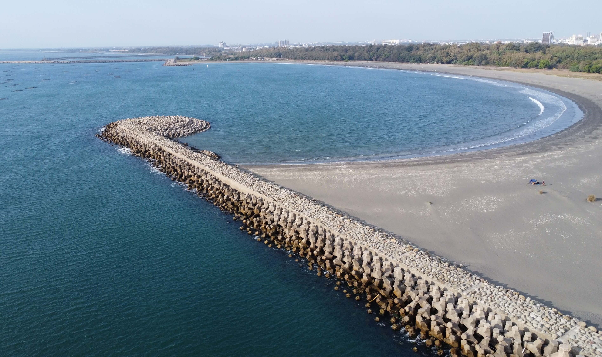

台南－安平軍港
台南安平是台灣台南市的一個地區，而安平軍港則是安平的重要地標之一。安平軍港歷史悠久，曾是台灣重要的海軍基地。在19世紀時，安平軍港是荷蘭人在台灣的軍事據點，後來又成為明鄭王朝和清朝的海軍基地。在二戰期間，日本佔領台灣後，安平軍港成為日本帝國海軍的重要據點。
如今，安平軍港已經轉型為一個觀光景點，遊客可以參觀軍港博物館，了解台灣的海軍歷史，並欣賞到當地的海景風光。此外，軍港附近還有許多古老的建築和文化遺產，例如安平古堡和安平老街，都是值得一遊的地方。
軍港結合了豐富的歷史和文化元素，同時提供了美麗的海岸線和多樣的觀光體驗，成為了許多遊客前往台南的必訪景點之一。
軍艦博物館是一個展示軍艦歷史和文化的特殊博物館。這些博物館通常展示著實際的軍艦，讓遊客可以近距離觀賞和了解這些巨大而強大的戰艦。
不僅僅是一個展示場所，它也提供了教育和學習的機會。遊客可以參觀軍艦的各個區域，如舰橋、武器系統、機艙等，並透過展覽、多媒體和導覽解說瞭解軍艦的運作和歷史。此外，博物館還可能展示軍艦上使用的裝備、歷史文物和照片等。
對於歷史愛好者、軍事愛好者和普通遊客來說，都是一個引人入勝的場所。它們提供了一個獨特的機會，讓人們深入瞭解軍艦的建造、戰鬥歷史和人員生活，同時也展示了軍艦在歷史和技術上的重要性。

軍艦上的直升機起降夾板，是一種特殊的設備，用於在海上的軍艦上進行直升機的起降操作。這種夾板通常是由堅固的材料（如金屬）製成，並固定在軍艦的特定區域，稱為直升機甲板。
起降夾板的主要功能是提供一個平穩的平台，讓直升機可以安全地降落和起飛。它通常具有防滑表面和適當的排水系統，以確保在不同天氣和海況下仍能保持良好的操作環境。此外，起降夾板還設有固定點和網狀結構，用於固定直升機，以防止其在風浪中移動或翻覆。
在海上作戰和軍事行動中非常重要。它提供了一個關鍵的平台，使直升機能夠在沒有陸地支援的情況下進行補給、撤離、偵察和其他任務。這種起降夾板的設計和運作，需要經過嚴格的安全標準和訓練，以確保艦載直升機的順利運作和船員的安全。

台南月牙灣位於台南市安南區，是一個知名的海灣。這個海灣因其形狀彷彿一個月牙而得名。月牙灣擁有細膩的沙灘和清澈的海水，是一個適合休閒和欣賞海景的地方。
除了沙灘，月牙灣周邊還設有各種設施和服務，例如休憩區、涼亭和公共廁所，提供便利的休息環境。遊客可以帶著野餐墊，在這裡享受著海景和自然風光，度過一個愉快的休閒時光。
無論是欣賞日出、日落，還是在白天享受陽光和海水的激情，台南月牙灣都是一個迷人的目的地，讓人們可以沉浸在大自然的美麗中，放鬆身心，遠離煩囂，感受大海的恩賜。